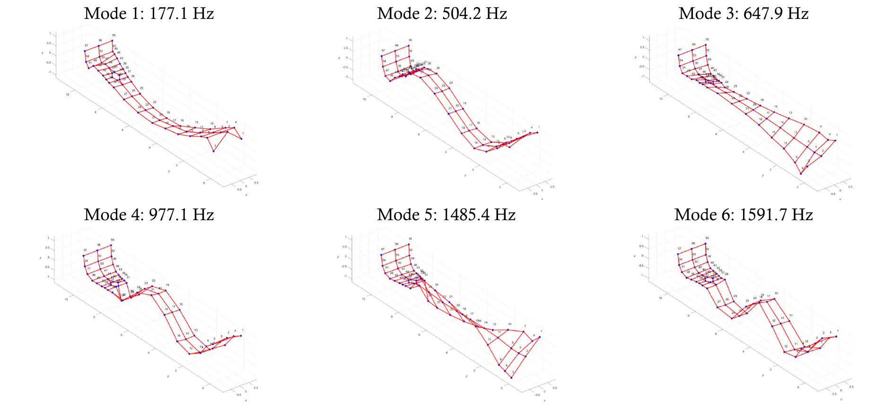
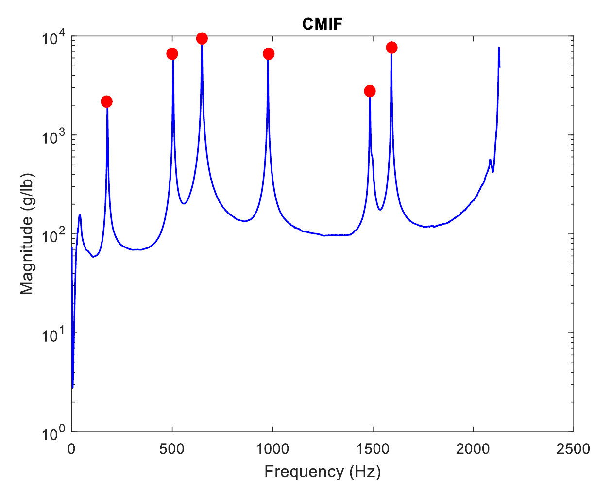
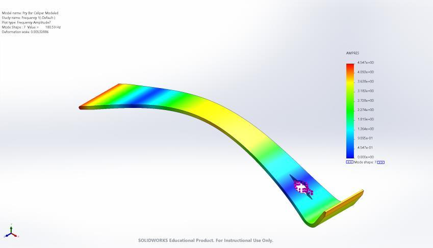

Experimental dynamics
Prybar modal analysis
Comparing measured vibration modes with finite-element predictions.
- Timeline
- Oct — Nov 2024
- Context
- Experimental & computational project
- Tools & methods
Team: Noah Bast, Jacob Cockerill, Toby Zhao

Overview
The assignment was to choose a real-world part and perform a modal analysis. Our team selected a steel prybar, measured its vibration response, and compared the resulting natural frequencies and mode shapes with finite-element predictions. The project connected hands-on testing with CAD modeling and an assessment of where the models agreed with the physical part.
Measuring the physical part
We marked 57 test locations on the prybar and collected force and acceleration data with an instrumented hammer and accelerometer. The acquisition setup used five averages and an exponential response window. We reviewed time histories, frequency-response functions, coherence, and a reciprocity check to assess measurement quality.
- Used the complex mode indicator function (CMIF) to identify the first six nontrivial modes.
- Observed noisier response and lower coherence near the more complex end of the prybar, which limited confidence in those measurements.
Building the first finite-element model
We built the initial SolidWorks model from dial-caliper and tape measurements, simplifying the part as symmetric with uniform thickness and an estimated bend angle. Because the exact alloy was not specified, the model used assumed plain-carbon-steel properties. The initial mesh contained 151,132 elements, with local mesh control around the more complex geometry.
Comparing test and simulation
The initial model predicted higher frequencies than the experiment for all six listed modes, with relative differences of approximately 2–7%. The table preserves the mode numbering reported in the study and separates the initial model from the later geometry revision.
| Mode | Measured | Initial FEA | Revised FEA |
|---|---|---|---|
| 1 | 177.1 | 180.59 | 137.21 |
| 2 | 504.2 | 526.46 | 436.78 |
| 3 | 647.9 | 671.46 | 551.11 |
| 4 | 977.1 | 1028.8 | 860.9 |
| 5 | 1485.4 | 1584.2 | 1374.1 |
| 6 | 1591.7 | 1669.8 | 1439.8 |
What the geometry revision revealed
The physical prybar was not perfectly flat, so we used photographed views as sketch references for a revised model. Despite a larger mesh of 272,588 elements, its reported frequencies fell below the measurements and differed by approximately 7–23%. For the first mode, the prediction shifted from 180.59 Hz to 137.21 Hz, compared with the measured 177.1 Hz. More geometric detail did not automatically produce a better match.
Limits and next steps
The study identified assumptions in tracing the photographed geometry and the way the prybar rested on foam as areas to revisit. Material uncertainty and the noisier measurements near the complex end also remained relevant. The next step would be to check these factors before treating either model as a reliable representation of the part’s dynamics.
Project details


Open full-size figure

Open full-size figure